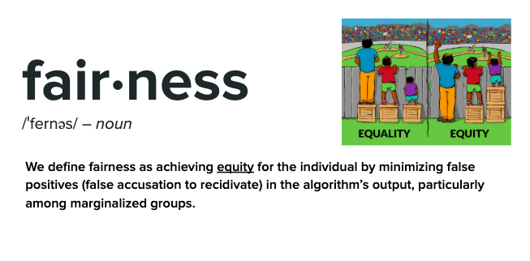

What constitutes a "fair" algorithm in the
criminal justice system?

In order to develop more fair algorithms, we
began by defining what "fair" means in the context of risk assessment
algorithms. Our qualitative definition of fairness is shown above.
We quantitatively define fairness as minimizing disparate impact among
marginazied groups. For more information on how we used disparate
impact to measure the fairness of each of our algorithms
see our fairness repository on GitHub.